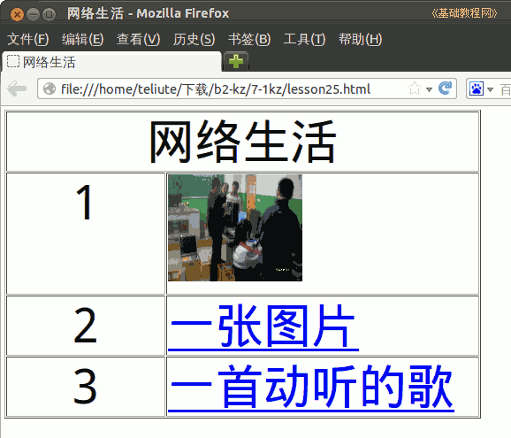

2012-2013 第二学期七年级文字处理和网页教学设计
作者：TeliuTe 来源：基础教程网
二十五、学会插入网络链接 返回目录 下一课
（一）教学设计
1、学习目标：学会插入网络链接
2、注意事项：绕过弯来，既不要跳也不要落，一楼过了二楼
3、教学过程：
1）教师准备学案和板书；
2）学生整队进入，开机抄黑板上笔记；
3）教师讲解板书演示操作；
4）学生打指法、日志、完成操作；
5）教师打勾记录学生指法成绩，检查日志和操作；
注：学生抄完笔记就开始打指法、日志，老师讲完后再继续完成；
（二）板书设计(学生笔记)
第25课 学会插入网络链接
1,运行KZ输入标题，属性，插入表格。
2,进校园网在图形上点右键，复制地址。
3,再点插入图片粘贴，代替文本。
4,再复制一个图像地址，插入链接。
5,再复制一个音乐地址，插入链接。
6,保存，浏览。
--
操作指南：一个4×2的表格，标题是“网络生活”，内容第一行插入图片，第二、三行一个图片链接，一个音乐链接
操作图示：

（三）课后记 2013-06-04 17:40
--
复制图片地址时，好多复制成链接地址了，结果跑到网页里了
原因是课题是风“网上链接”，这个弯不容易绕过来
--
前面的插入表格，合并单元格，缩放单元格操作有些陌生了
上周一节课没上，结果就忘了好多，这个全靠课堂上学点东西
--
天气热了，一讲东西学生的热量就一股热浪
教室里装个加温的风扇就好了，下次机器人做一个这样的创意
--
把教室的布局图输入到程序中，机器人按照路径来行走
然后一边加水，另一边进行风扇，如果能制冷就更好了，用冰水好了
--
嗓子有些痛，好久没大声说话，讲课的时候得控制一下
等哑了就晚了，后面快要停课了，抓紧时间多学点
--
期末学生也个个闷的，脑瓜不转弯慢了
适当把内容简化一下才好，不要音乐链接了
返回目录 下一课
本教程由86团学校TeliuTe制作|著作权所有
基础教程网：http://teliute.org/
美丽的校园……
转载和引用本站内容，请保留作者和本站链接。